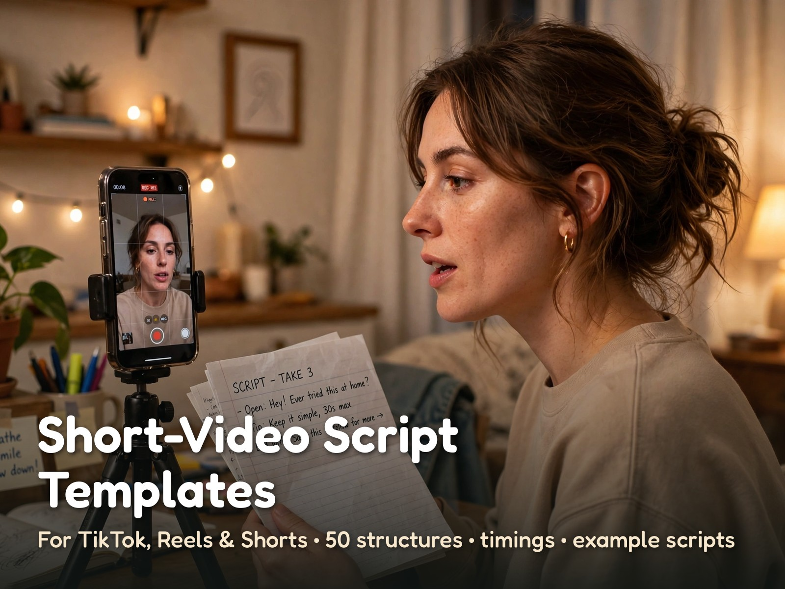

$9 USD — instant download
Short-Video Script Templates for TikTok, Reels & Shorts — 50 Ready-to-Film Structures with Timings & Example Scripts
Get it on GumroadStaring at a camera with no structure is where most short videos die. This pack hands you 50 proven structures for TikTok, Reels and Shorts, so the shape of the video is decided before you ever press record — each template with a beat-by-beat timing table, a complete example script you can read aloud, and a field note from real use.
The 50 templates are organised in five groups of ten. Core formats cover mistake confessions, myth busts, three-step fixes, before-and-afters, rankings and checklists. Proof and process formats include comparisons, routines, reactions, seven-day experiments and A/B tests. Audience engines — comment-reply videos, rapid-fire FAQs, breakdowns and challenges — are designed to seed your next ten videos. Depth formats handle mistake autopsies, dilemmas and honest scored reviews, while authority and series formats give you restarts, trend remixes, objection crushers and open loops that bring viewers back.
Every template is built on a 30-second skeleton — hook, build, payoff — with second-by-second timings, and the pack shows you how to compress a structure to 15 seconds or stretch it toward a minute without breaking its rhythm. The example scripts are complete and readable aloud, so you can feel the pacing in your mouth before adapting the words to your topic. The field notes are the other half of the value: each one names the single mistake or insight that only shows up after a format has actually been used.
A structure does not make a video good — it makes a good idea filmable. These templates assume you will bring your own real numbers, examples and opinions, and several warn you exactly where faking it breaks the format. No view counts or income are promised anywhere in the pack, because no template can promise that. What it removes is the structural blank page, which for most creators is the slowest part of filming day.
This is a digital download — no physical item will be shipped. For personal use; please do not redistribute or resell the file.